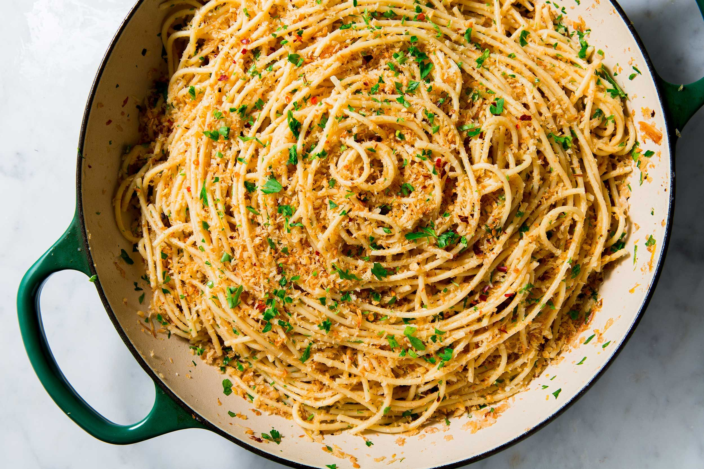

Spaghetti
Document
Compton Family Spaghetti

How to make spaghetti
My family's recipe for spaghetti is quick, cheap, and best of all, delicious!
Ingredients
- Noodles
- Crushed tomato
- Garlic
- Onion
- Carrot
- Bell Pepper
- Italian seasoning
- Olive oil
Steps
- Mince garlic, onion, bell pepper and carrots
- Saute until soft and fragrant
- Add tomato sauce and bring to a simmer
- In another pot, bring water to a boil. Add a liberal amount of salt to water
- Salt tomato sauce to taste, add italian seasoning
- When water boils add noodles and cook for ten minutes
- When snoodles are fully cooked drain, cover in sauce, and enjoy!